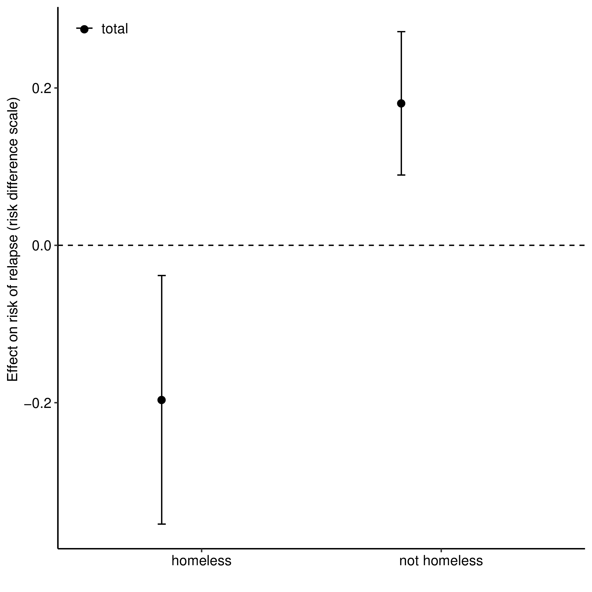

3 How to choose an estimand: Real world example
3.1 Comparative effectivness of two medications for opioid use disorder (OUD)
Motivation: Opposite overall treatment effects for homeless versus nonhomeless participants.

3.1.1 Getting specific about the question
To what extent does the indirect effect through mediators of adherence, pain, and depressive symptoms explain the differences in treatment effects on OUD relapse for homeless and nonhomeless individuals?
What estimand do we want?
- Can we set \(M=m\) (i.e., same value) for everyone?
- Are we interested in estimating indirect effects?
\(\rightarrow\) So, not controlled direct effect.
- Do we have an intermediate confounder?
- Yes, and it’s important.
\(\rightarrow\) So, not natural (in)direct effects.
- So, we’re left with the interventional direct and indirect effects.
- Do we want to estimate the path through treatment initiation (\(Z\))?
- Yes, so, not the conditional versions of these effects.
- Estimands:
- Direct effect: \(\E(Y_{1,g_0} - Y_{0,g_0})\)
- Indirect effect: \(\E(Y_{1,g_1} - Y_{1,g_0})\)
- Need to incorporate multiple and continuous mediators